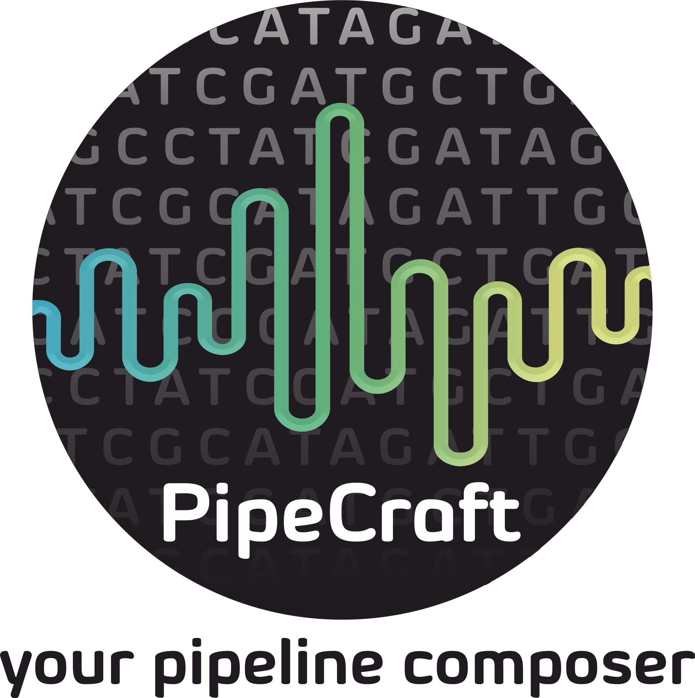

PipeCraft documentation¶
{kind=link}
PipeCraft implements various popular tools for amplicon sequence data analyzes that are linked to generate custom bioinformatics pipeline/workflow. Panels for pipeline processes contain key options for sequence data analyses, but full use of any implemented program may be accessed via PipeCraft console (command line). Default settings in the panels represent commonly used options for amplicon sequence data analyses, which may be tailored according to user experience or needs. Custom designed pipeline settings can be saved and thus the exact same pipeline may be easily reused on other sequencing data (and for reproducibility, may be used as a supplement material in the manuscript). PipeCraft enables generation of the full pipeline (user specifies the input data and output will be e.g. OTU/ASV table with taxonomic annotations of the OTUs/ASVs), but supports also single-step mode where analyses may be performed in a step-by-step manner (e.g. perform quality filtering, then examine the output and decide whether to adjust the quality filtering options of to proceed with next step, e.g. with chimera filtering step).